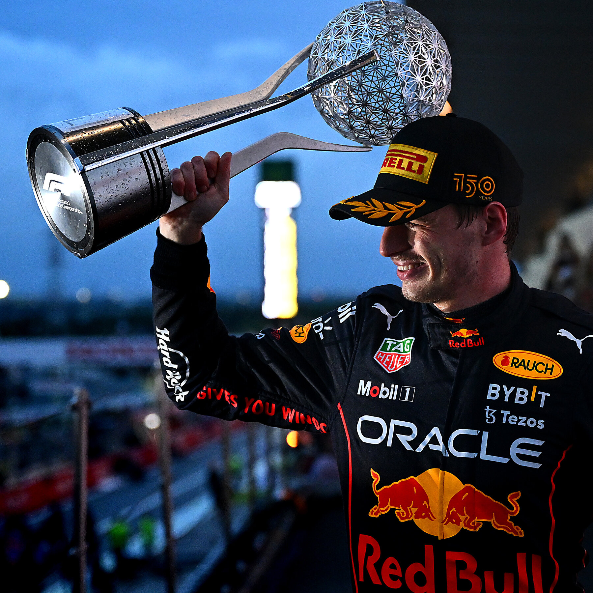
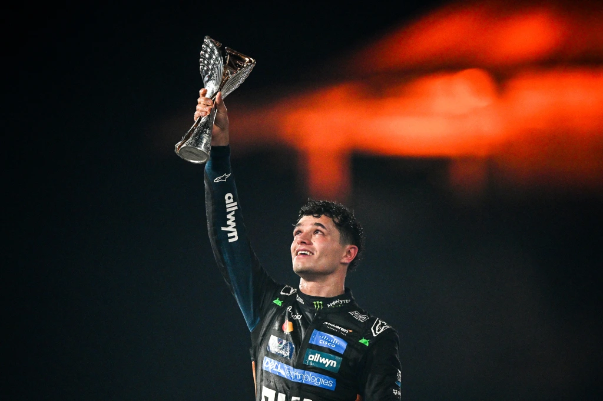
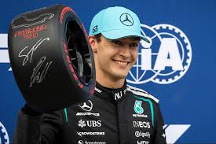
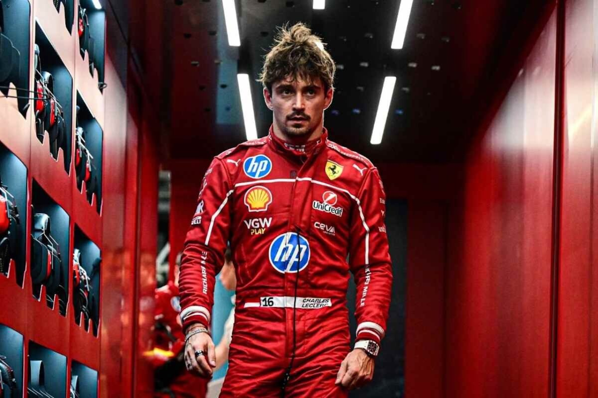

Max Verstappen

Max Verstappen is een van de meest succesvolle en dominante coureurs in de moderne Formule 1. De Nederlandse rijder staat bekend om zijn agressieve maar gecontroleerde rijstijl, waarbij hij op hoge snelheid toch zeer precies blijft. Hij maakte al op jonge leeftijd indruk door zijn snelle doorbraak en groeide uit tot een vaste titelkandidaat. Zijn prestaties spreken voor zich: Verstappen heeft meerdere wereldtitels gewonnen, tientallen Grand Prix-overwinningen behaald en verschillende records op zijn naam gezet, waaronder het grootste aantal zeges in één seizoen. Hij blinkt uit in race-inzicht, bandenmanagement en het benutten van elke kans tijdens een race. Dankzij zijn constante prestaties en sterke samenwerking met het team heeft hij zich gevestigd als een van de grootste coureurs in de geschiedenis van de Formule 1.
Lando Norris

Lando Norris is een Britse Formule 1-coureur die sinds 2019 uitkomt voor McLaren. Hij behaalde zijn eerste podium in Oostenrijk 2020 en heeft sindsdien meerdere podiumplaatsen op zijn naam gezet, waaronder in Italië en België. Norris staat bekend om zijn sterke kwalificaties en consistente puntenfinishes: in 2022 scoorde hij in vrijwel elke race punten voor McLaren. Hij rijdt vaak snel in droge én natte omstandigheden en heeft meerdere keren het snelste rondje van een race op zijn naam geschreven. Met zijn combinatie van snelheid en precisie heeft hij McLaren regelmatig geholpen om hogere posities in het constructeurskampioenschap te behalen en behoort hij tot de meest competitieve jonge coureurs op de grid.
Oscar Piastri

Oscar Piastri is een Australische Formule 1-coureur die in 2023 zijn debuut maakte voor McLaren. In zijn eerste seizoen liet hij meteen zien dat hij competitief is, met meerdere puntenfinishes en een opmerkelijke overwinning op het circuit van Monaco. Piastri staat bekend om zijn scherpe kwalificaties en race-inzicht, waardoor hij vaak meer uit zijn auto weet te halen dan verwacht wordt. Hij behaalde in korte tijd diverse top-10-klasseringen en scoorde zijn eerste pole position al in zijn rookiejaar. Met zijn precieze rijstijl en sterke samenwerking met het team wordt hij beschouwd als een van de meest veelbelovende talenten in de Formule 1 van dit moment.
George Russell

George Russell is een Britse Formule 1-coureur die sinds 2022 uitkomt voor Mercedes. Hij boekte zijn eerste Grand Prix-overwinning in São Paulo 2022 en heeft sindsdien meerdere podiumplaatsen verzameld. Russell staat bekend om zijn snelheid in kwalificaties en zijn vermogen om onder druk consistente resultaten te behalen tijdens races. Hij heeft regelmatig het snelste rondje van een Grand Prix gereden en speelt een belangrijke rol in het helpen van Mercedes bij het behalen van hoge posities in het constructeurskampioenschap. Met zijn combinatie van precisie, strategisch inzicht en ervaring bij topteams wordt Russell gezien als een vaste titelkandidaat en een van de sterkste coureurs op de grid.
Charles Leclerc

Charles Leclerc is een Monegaskische Formule 1-coureur die sinds 2018 uitkomt voor Ferrari. Hij behaalde zijn eerste Grand Prix-overwinning in België 2019 en sindsdien heeft hij meerdere overwinningen en pole positions op zijn naam gezet, waaronder in Australië en Monaco. Leclerc staat bekend om zijn scherpe kwalificaties en agressieve maar gecontroleerde rijstijl in races. Hij heeft vaak de snelste rondetijden gereden en is een belangrijke factor geweest in Ferrari’s strijd om het constructeurskampioenschap. Met zijn snelheid, race-inzicht en vermogen om onder druk te presteren, wordt Leclerc beschouwd als een van de grootste talenten van zijn generatie en een serieuze kandidaat voor toekomstige wereldtitels.